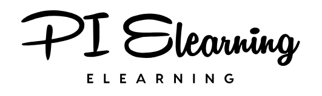
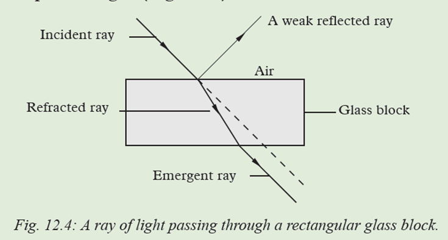
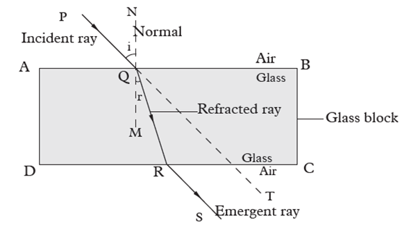
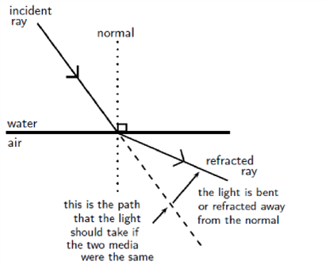
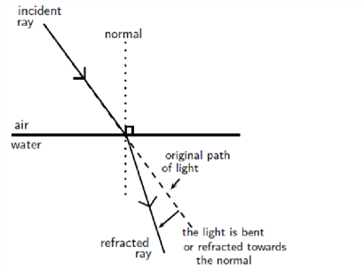
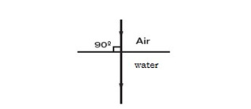
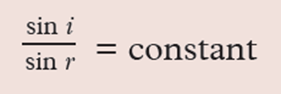
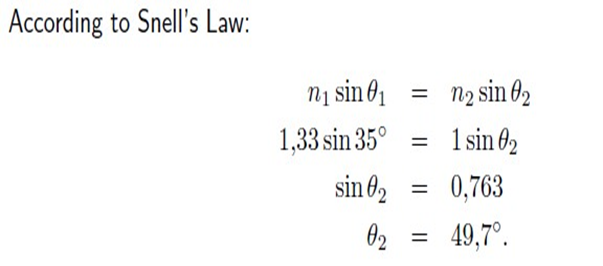
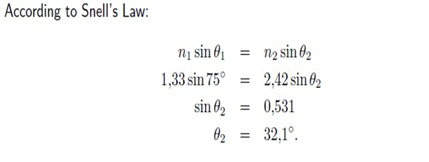
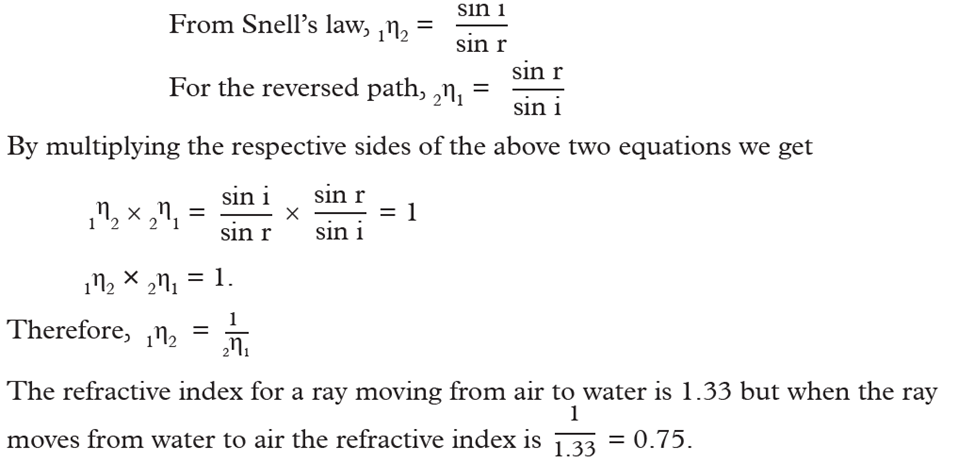

When you dip a plastic ruler into a transparent container of clean water, the ruler appears to be bent at the point where it enters into water. This is because light rays change direction (bend) when traveling from air to water. Therefore, a ruler appears bend due to refraction of light.

Refraction of light :is the bending of light rays when they travel from one medium to another of different optical density. Also, refraction is the change of direction when light rays travel from one medium to another.
Experiments show that the velocity of light in air (vacuum) is 3 × 108 m/s. The velocity of light is less in all the other media. Hence air is considered as an optically rarer medium. All the other media, are considered as optically denser media than air.

When light is moving from an optically dense medium to an optically less dense medium, it will be refracted away from the normal.

When light is moving from an optically less dense medium to an optically denser medium,it will be refracted towards the normal.

When an incident light is perpendicular to the surface, it continues to travel undeviated in a straight line but the speed of light is reduced in the glass. This is, sometimes, referred to as the normal refraction.

1. The incident ray, the refracted ray and the normal, at the point of incidence, all lie in the same plane.
2. The ratio of the sine of the angle of incidence to the sine of the angle of refraction is a constant for a given pair of media (Snell’s law) i.e

The angles of incidence and refraction when light travels from one medium to another can be calculated using Snell’s Law. n1 sinθ1 = n2 sinθ2 where n1 = Refractive index of material1 n2 = Refractive index of material2 θ1 = Angle of incidence θ2 = Angle of refraction
The refractive index (η) is the measure of bending of light i.e is the ratio of sine of angle of incident to the sine of angle of refraction (hence Snell’s law).
The refractive index (symbol n) of a material is the ratio of the speed of light in a vacuum to its speed in the material and gives an indication of how difficult it is for light to get through the material.
n=c/v
A vacuum is a region with no matter in it, not even air. However, the speed of light in air is very close to that in a vacuum.
Where n= refractive index (no unit) c=speed of light in a vacuum =3x108m/s. v=speed of light in a given medium (m/s)
A light ray, with an angle of incidence of 350, passes from water to air. Find the angle of refraction using Snell’s Law. Discuss the meaning of your answer.(refractive index of water is 1.33 , for air it is 1).

The light ray passes from a medium of high refractive index to one of low refractive index. Therefore, the light ray is bent away from the normal.
A light ray passes from water to diamond with an angle of incidence of 750. Calculate the angle of refraction.(refractive index of diamond is 2.42)

Just like light rays travel from medium 1 to a medium 2, it also travels in the reverse direction i.e. travel from the medium 2 to medium 1. This is known as the principle of reversibility of light. It states that light will follow exactly the same path if its direction of travel is reversed. It states that light will follow exactly the same path if its direction of travel is reversed

If object and observer are situated in different medium then due to refraction, object appears to be displaced from it’s real position. Example: An object is in denser medium and observer is in rarer medium